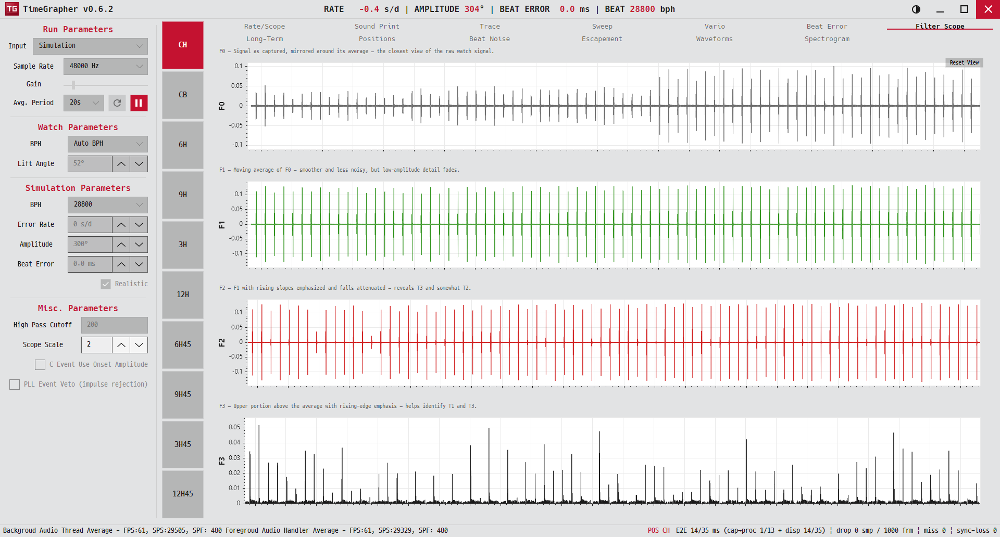

7. Filter Scope
같은 파형을 4단계 필터로 동시에 보여 줍니다. 어떤 필터에서 어떤 탈진기 충격이 가장 잘 보이는지 비교합니다.
Shows the same waveform through four filter stages at once, so you can compare which filter reveals which escapement event.

용도 · Purpose
원신호부터 점점 강하게 가공한 네 가지 보기를 나란히 두어, 잡음에 묻힌 충격 타이밍을 가장 잘 드러내는 단계를 찾습니다.
Places four progressively processed views side by side to find the stage that best exposes impulse timing hidden in noise.
무엇이 보이나 · What's shown
| 레인 | 내용 · Content |
|---|---|
| F0 | 원신호(평균 기준 미러). 가공 거의 없음.Raw signal, mirrored about its average — closest to unfiltered. |
| F1 | F0의 이동평균(미러). 더 매끈하고 잡음이 적음.Moving average of F0 (mirrored) — smoother, less noise. |
| F2 | F1에서 상승 기울기를 강조 — T3·T2 타이밍 사건이 드러남.F1 with rising slopes emphasised — reveals T3/T2 events. |
| F3 | 상단 엔벨로프(단측) + 상승엣지 강조 — T1·T3 식별에 도움.Upper envelope (one-sided) with rising-edge emphasis — helps spot T1/T3. |
네 레인은 가로(시간) 축을 공유하며 기본적으로 최근 약 2초를 자동 추적합니다. 똑/딱은 색으로 구분됩니다(초록=tic, 빨강=toc).
All four share the horizontal (time) axis and auto-follow the last ~2 seconds by default. Tics/tocs are colour-coded (green=tic, red=toc).
읽는 법 · How to read
- 레인을 위아래로 비교해, 검출하려는 충격이 또렷하게 솟는 단계를 고릅니다.Compare lanes vertically to pick the stage where the impulse you care about stands out clearly.
- 한 비트 안에서 여러 충격 성분(세로 구조)이 보이면 탈진기 동작 단계를 구분할 수 있습니다.Multiple impulse components (vertical structure) within a beat let you separate escapement action phases.
옵션 · Options
- Y 줌 — 마우스 휠(네 레인 공통).Y zoom — mouse wheel (shared across lanes).
- Y 팬 — 세로 드래그(공통).Y pan — vertical drag (shared).
- X 줌/팬 — 한 레인에서 조작하면 네 레인이 함께 움직입니다. 전체로 줌아웃하면 라이브 추적이 다시 켜집니다.X zoom/pan — adjusting one lane moves all four; zooming fully out re-arms live follow.